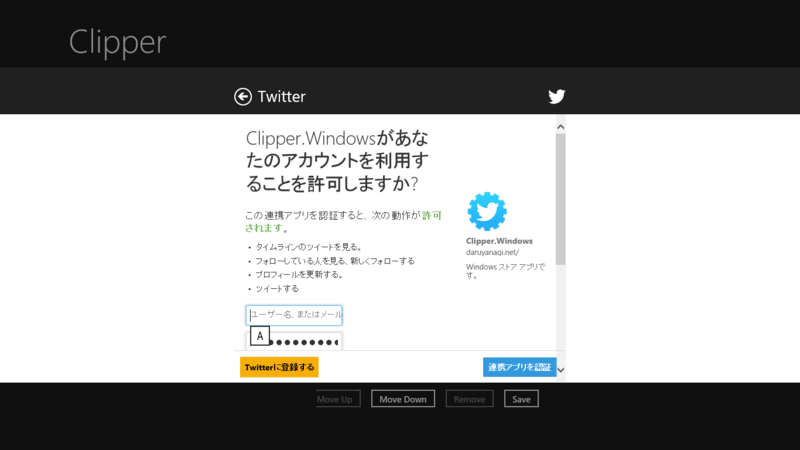

TwitterRT でストア アプリからお手軽ツイート（※要改修
公開日：

Windows ストア アプリへ手軽にツイート機能を追加したいときに便利なライブラリが、TwitterRt - Tweet from Windows Metro Apps - Home。こういう感じの WebAuthenticationBroker を使った認証処理を一行で実現してくれるのがいい。
private TwitterRt t = new TwitterRt( "consumerKey", "consumerSecret", "callbackUrl" );private async void Button1_Click(object sender, Windows.UI.Xaml.RoutedEventArgs args) { // 認証 await t.GainAccessToTwitter(); }
private async void Button2_Click(object sender, Windows.UI.Xaml.RoutedEventArgs args) { // ツイート await t.UpdateStatus("Hello From TwitterRt"); }
ソースコードを斜め読みしかしてないのだけど、認証処理で取得したトークンなんかは自動で ApplicationData.RoamingSettings に保存してくれるっぽい。一度どこかの端末で認証しておけば、ほかの端末でもそれが自動で同期されるはず。超便利だな。
でも、残念ながらメンテナンスされていないようで、NuGet で取得したバイナリが動かない。しょうがないのでソースコードを落としてきてちょろちょろっと直した。
// 46行目ぐらい // const string _updateStatusUrl = "https://api.twitter.com/1/statuses/update.json"; const string _updateStatusUrl = "https://api.twitter.com/1.1/statuses/update.json";
まずは Twitter の API を 1.0 → 1.1 へとアップデート。
// 295行目ぐらい Request.Method = "POST"; Request.ContentType = "application/x-www-form-urlencoded"; // 追加 Request.Headers["Authorization"] = headers;
ContentType も設定しなきゃいけないらしい。
これだけで一応動くのだけど……
// 179行目ぐらい // request.Add("status", Uri.EscapeDataString(status)); request.Add("status", Uri.EscapeDataString(status.Replace("\r\n", "\n")));
改行を含んだテキストをツイートできるように、もう一カ所修正しておいた。